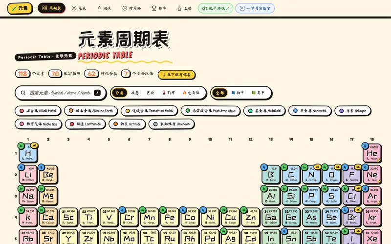
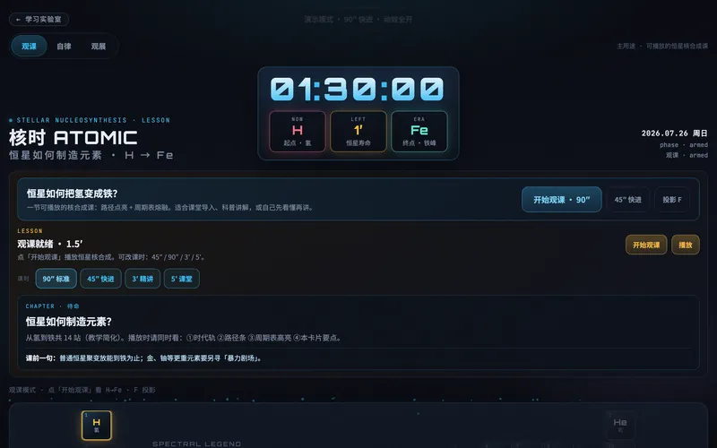
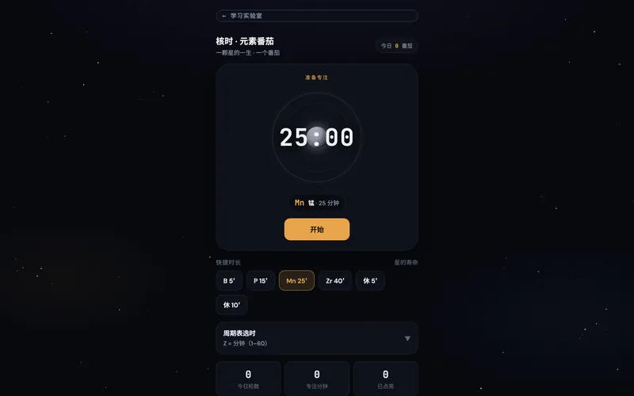
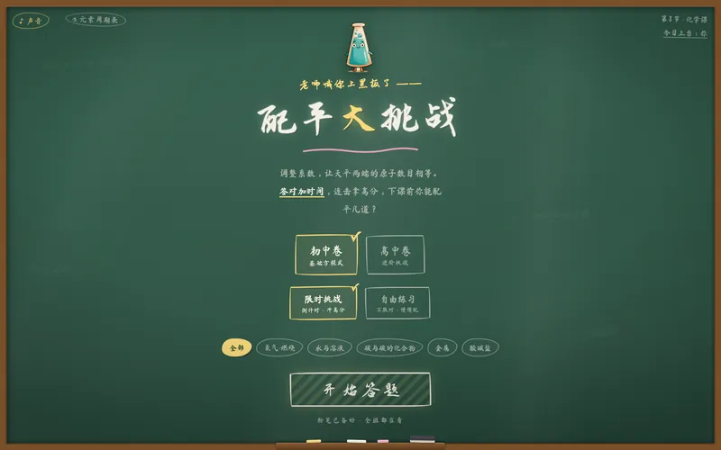
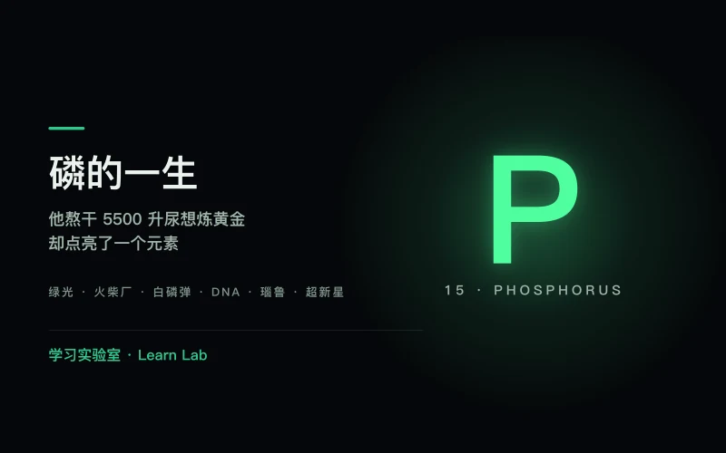
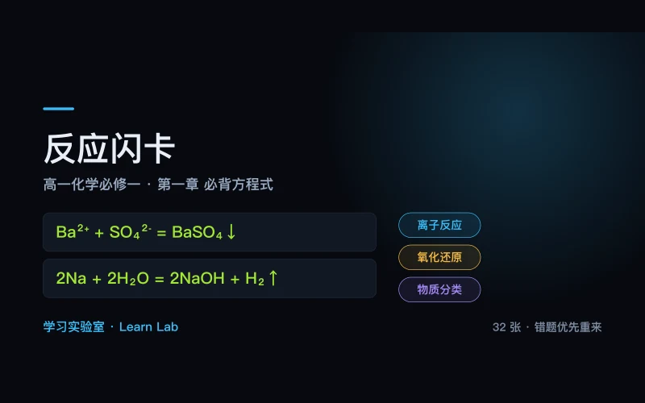

化学
点开就能用
已上线元素周期表
Periodic Table
118 个元素，每一个都有实拍照片、发现故事和冷知识。还有焰色反应实验室、元素发现时间轴，和一个靠线索猜化合物的侦探小游戏。
打开

已上线核时
Atomic Clock
一节可以按播放键的课：看恒星怎么把氢一步步烧成铁，元素周期表在眼前被一格格点亮。想安静看也行，当成一台叙事时钟摆着。
打开

已上线元素番茄
Element Pomodoro
一颗星的一生 = 一个番茄钟。专注的 25 分钟里，星球从氢云一路演化到超新星；休息时它慢慢冷却。自律第一，知识顺带记住。
打开

已上线配平大挑战
Balance Challenge
老师喊你上黑板配平方程式。粉笔手写风，两边天平实时倾斜，配错了它就塌一边。限时模式适合考前突击练手感。
打开（站外新窗口）

已上线磷的一生
The Light Bearer
1669 年一个炼金术士熬干 5500 升尿想炼黄金，熬出来的东西在黑暗里自己发光。九幕讲完这个元素：火柴厂女工发绿光的下颌骨、白磷弹、你的 DNA 骨架、被挖空的瑙鲁岛，以及它来自一颗死去的恒星。
打开

已上线反应闪卡
Must-Know Equations
高一化学第一章「物质及其变化」的必背方程式，离子反应、氧化还原、物质分类共 32 张。先想再翻面，答错的攒进错题堆、下一轮优先重来，进度存在自己设备上。每条方程式都过了原子与电荷守恒的程序校验。
打开
生物
点开就能玩正在做
每天推进一点
开发中
钔牌
Md Cards
用元素性质当出牌规则的卡牌对战 —— 同族可接、同周期可接、金属性压非金属。规则页和对战界面已有雏形，正在合并成一个能真的打完一局的版本。
敬请期待